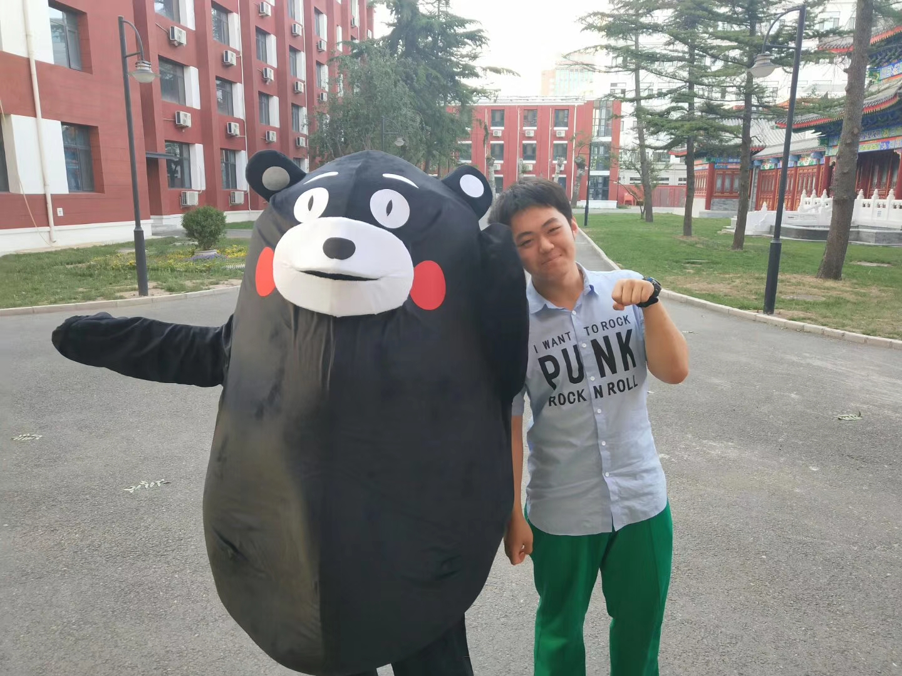
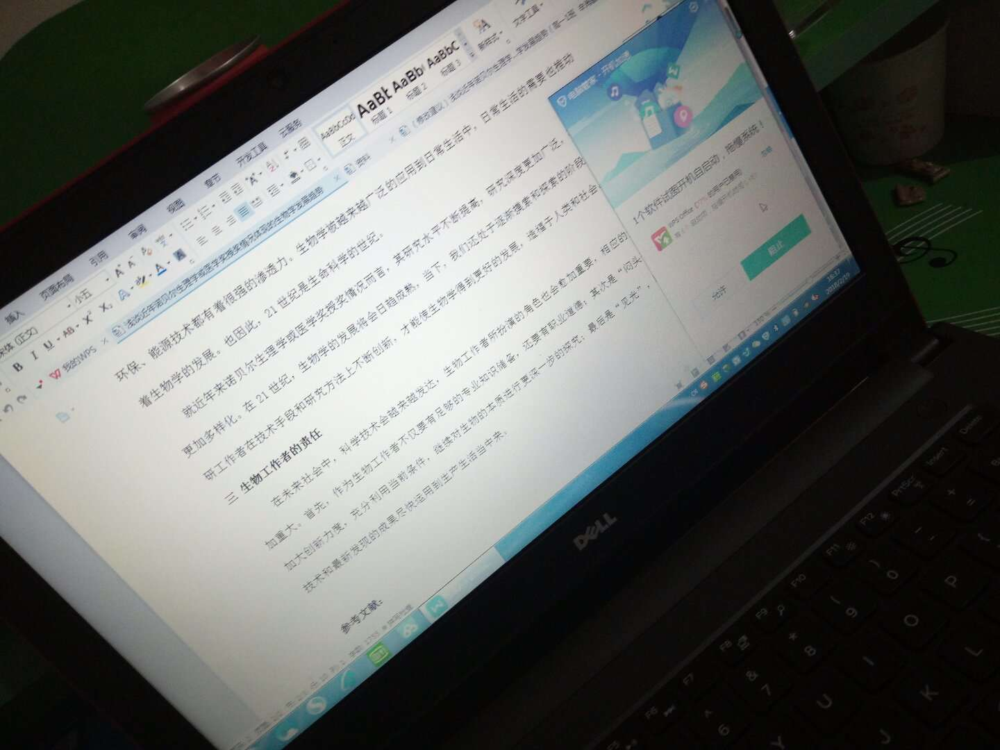
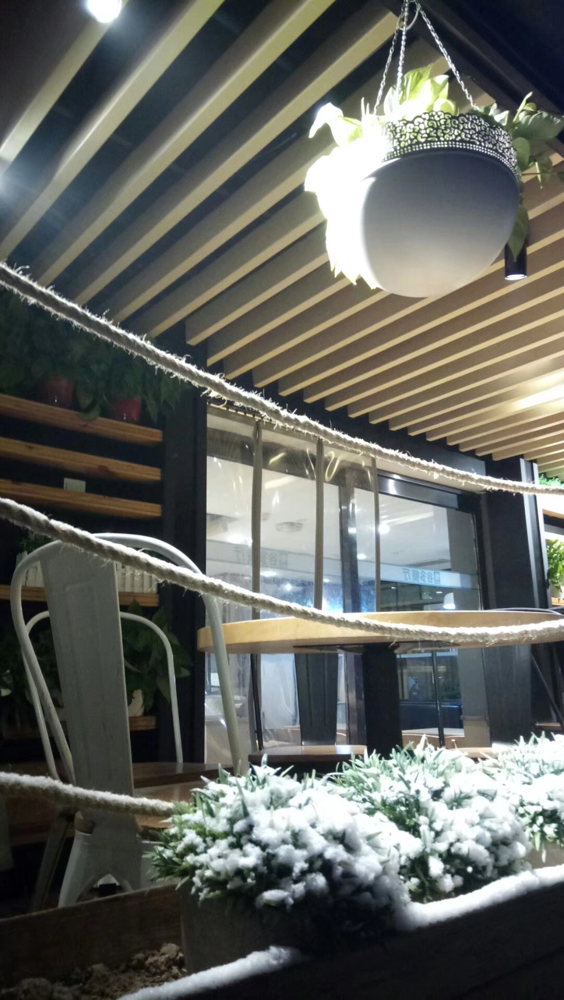

高中的碎片
我的过去只剩下一些碎片。虽然是碎片，但是依然溢彩流光。
高一的时候印象最深的......就是那时候的我还挺瘦的（捂脸）图二是我们乐队的首次演出的合照。第一次与周围人配合，第一次登上舞台， 第一次与最好的大家相遇，并在后来排练了《你不是真正的快乐》和《晴天》，曾经与民族印染STEAM课程联动， 在音乐节作为唯一一个音乐团体社团演出，广受欢迎。图三则是有关生物研究性学习的内容，也算是我与生物结缘的开始。在逐步了解 2000年到2017年的诺贝尔生理学与医学奖的过程中，我爱上了这门学科，也让我有了选择生科专业的想法。   